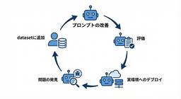
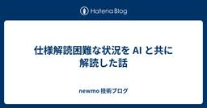
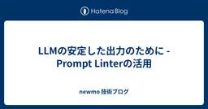
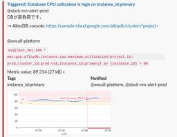
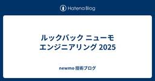

newmo 技術ブログ
https://tech.newmo.me/
技術で地域をカラフルに
フィード

LangfuseとDSPyを使った定量的なプロンプト評価と改善の仕組み
newmo 技術ブログ
(この記事は心のこもった手書きでお届けしております) @kuといいます。 10月に放送された「ガイアの夜明け」で紹介された、タクシーに乗りたいお客さまからの電話を受けて指定場所に迎車するLLMプロダクトmaido(Mobility AI Dispatch Operator)の開発に携わっています。 この記事ではmaidoで行っているLangfuseとDSPyを使ってプロンプトを定量的に改善していく仕組みをご紹介します。 Langfuseとは Langfuseは、LLMアプリケーションのobservabilityを確保するツールです。電話ごとのセッションや、トレース単位でLLM呼び出しの入出力、…
15時間前
Design Tokenが変化することを前提にした型安全なCSS — newmoでPanda CSSを採用した理由 5
5
newmo 技術ブログ
© 2023-Present Segun Adebayo newmoでは、1行目のCSSを書く前に1つ目のDesign Tokenを定義しました。Design Tokenを起点にした開発を実現するため、CSSスタイリングフレームワークにはPanda CSSを採用しています。 しかし、創業期のスタートアップでは、デザインシステムは完成品ではなく日々変化していくものです。Design Tokenの命名が変わる、階層構造が見直される、色の値が調整される——こうした変更が頻繁に発生します。数百箇所に散らばったtokenを手動で置換すると、必ず修正漏れが発生します。そもそもDesign Tokenの使用…
2日前

仕様解読困難な状況を AI と共に解読した話
newmo 技術ブログ
はじめに newmoグループでは参画してくれたタクシー会社のDXを行っています。タクシー業界は老舗企業が多く、運用されているシステムに関する知見が社内に残っていないケースが珍しくありません。また、長年稼働してきたシステムは技術的にもレガシー化が進んでいます。開発当初は時代に合った優れたシステムだったとしても、年月が経てば保守・運用の負担は増していきます。こうした課題を解決するため、グループ全体で使用するシステムを内製で統一し、モダンな技術スタックへ移行するDXを進めています。 このエントリでは、給与計算システムの置き換えに取り組んだ事例を紹介します。今回、置き換え対象となった旧システムは、外部…
3日前

LLMの安定した出力のために - Prompt Linterの活用
newmo 技術ブログ
newmoでは様々なタクシー業務の内製化・効率化（DX）に取り組んでいます。 タクシーはアプリを利用して呼ぶこともできますが、電話による配車も昔からのお客さまや、事業者の方などから根強い人気があります。 私はるふ(@_ha1f)の所属するMaido(Mobility AI Dispatch Operator)チームでは、この電話による配車の業務効率化のため、一部でAIによる電話応答・配車システムを開発し、実際に運用しています。 取り組みについて詳しくはこちらをご参照ください。 note.com 本稿では、「Prompt Linter」と呼んでいるAI電話配車システムのプロンプト自体の品質管理に…
4日前

newmoでのAlloyDBの最適化の日々 2
newmo 技術ブログ
1. はじめに newmoではメインのデータベースとしてGoogle CloudのAlloyDBを利用しています。サービスの成長に伴い、GraphQLやgRPCを通じたリクエストが増加し、最近、本番環境のデプロイ時にCPU負荷が90%を超えるという問題に直面しました。 本番環境へのデプロイ時のアラート この記事では、AlloyDBのパフォーマンス最適化に取り組んだ記録をまとめています。「発見 → 改善 → 計測」のサイクルを繰り返しながら、Slow Queryの改善、N+1問題の解消、そしてRead Pool Instanceの導入まで、段階的に行った改善とその効果について詳しく解説します。 …
5日前

ルックバック ニューモ エンジニアリング 2025 1
newmo 技術ブログ
はじめに newmo Engineering として、はじめて Advent Calendar を実施する運びになりました。 いままでも一部のエンジニアは各々カンファレンスなどで発表しておりますが、普段発信しないメンバーも含めて newmo に所属のエンジニアがどのようなことを行っているのか、技術的にどういう分野を探索しているのかなど幅広く発信していければと思います。 このエントリでは newmo として、どのような活動を1年間行ってきたのかをエンジニアリング観点を含めて振り返ればと思います。 前半戦（2025.01〜2025.06） 大阪万博の開催とライドシェア事業へのチャレンジ 大阪・関西…
6日前

Google ADK × DeepEvalで構築する音声AI Agentの会話評価基盤
newmo 技術ブログ
newmoでは、GoogleのAgent Development Kit（ADK）を用いて音声配車AIエージェント「Maido」を開発しています。 これは従来オペレーターが電話で行っていた配車を、音声対話で自動化する取り組みです。Maidoについては以下のnoteで詳しく解説しているので、ぜひ併せてご覧ください。 note.com 本記事では、Maidoとユーザーの会話評価を自動化するために構築した「Conversational Evaluation」基盤の仕組みと運用について紹介します。 Agentのアーキテクチャ 評価の仕組みを説明する前に、Maidoのアーキテクチャを簡単に紹介します。 …
1ヶ月前
GitHub ActionsでESLintのShardingを実装して、CIの実行時間を51%削減しました
newmo 技術ブログ
newmoでは、pnpm workspaceで管理している複数のアプリケーションやライブラリに対してESLintを実行しています。 プロジェクトの成長とともにLint対象のファイル数が増加し、CI実行時間とメモリ使用量が増加していました。GitHub Actionsのmatrixオプションを使用した動的なShardingを実装し、これらの問題に対応しました。 newmoフロントエンドの開発原則 newmoのフロントエンド開発では、次の原則を重視しています。 1つ目は、「同じ目的を達成するための手段を統一する」という原則です。同じ目的に対する複数の手段が混在するよりも、統一した手段を使うことで学…
1ヶ月前
monorepoでのApollo Client v4移行 - pnpm named catalogとLLMによる段階的移行
newmo 技術ブログ
Apollo Client v4が2025年9月にリリースされました。エラーハンドリングの改善やバンドルサイズの削減など多くの改善が含まれていますが、破壊的変更も多く含まれています。特にmonorepo環境では、複数のアプリケーションや共有ライブラリが同じパッケージに依存しているため、一括で移行すると変更範囲が大きくなりすぎて問題の切り分けが困難になります。そのため、アプリケーション単位で段階的な移行が必要でした。 この記事では、newmoのmonorepoでApollo Client v3からv4へ移行した際に、pnpm catalogのnamed catalog機能とLLMを活用して、v3…
1ヶ月前
Go Conference 2025 でワークショップ「†開発を加速させる黒魔術講座†」を開催しました！
newmo 技術ブログ
先日開催された Go Conference 2025 にて、newmo のエンジニアから「†開発を加速させる黒魔術講座†」というワークショップを開催させていただきました。本記事では、現在も公開しているこのワークショップの内容について紹介します！ †開発を加速させる黒魔術講座† このワークショップでは、日常的な開発ではなかなか触れる機会の少ない「†黒魔術†」的な Go のテクニックについて、実例を交えた解説と例題をベースとした学習の機会を提供することを目的として開催しました。 ワークショップの様子 当日はありがたいことに満員御礼で、参加者の方々もグループになってわいわい交流しながら課題に取り組ん…
1ヶ月前
renovatebotとpnpm catalogで実現する依存関係の自動アップデートとハンドブックによる安全な更新
newmo 技術ブログ
はじめに モノレポ環境での依存関係管理は、プロジェクトの規模が大きくなるほど複雑になります。 newmoでpnpm catalogを導入してOne Version Ruleを実装し、パッケージのバージョンを一元管理する仕組みを構築しました。詳細はmonorepo内でのパッケージのバージョンを1つだけに統一するOne Version Ruleをpnpm catalogで実装する - newmo 技術ブログを参照してください。 しかし、一元管理の実現だけでは依存関係の更新作業そのものは依然として手動であり、セキュリティアップデートの適用遅延やレビュー負荷の増大という課題が残っていました。 本記事で…
1ヶ月前
feature flag 入門と newmo の feature flag 基盤について
newmo 技術ブログ
こんにちは。Platform Team の tobi (@iam__tobi) です。 本記事では feature flag の基礎的事項の説明と、Platform Team で開発してきた newmo 独自の feature flag 基盤の設計思想と全貌について二段構成でご紹介します。 これから feature flag を導入しようと考えている方にとって参考になれば幸いです。 背景・概要 feature flag 入門 feature flag の概要 feature flag の構成要素 Toggle Point Toggle Router Toggle Context Toggle …
4ヶ月前
TSKaigi 2025に登壇しました
newmo 技術ブログ
2025年5月23日と24日に TSKaigi 2025 が開催され、newmo でソフトウェアエンジニアをしている @yui_tang と @nozomuikuta が一般応募枠で登壇しました。それぞれの発表の資料と概要は以下のとおりです。 TypeScript エンジニアが Android 開発の世界に飛び込んだ話 speakerdeck.com 本発表では、主に TypeScript で UI 開発を行っているエンジニアの方々に向けて、TypeScript と Kotlin、Web フロントエンドと Android アプリ開発に共通する多くの構造や思想、そしてその背景について紹介しました…
6ヶ月前
Cloud Service Mesh for Cloud Run で実現する PR 環境
newmo 技術ブログ
この記事では、Cloud Service Mesh for Cloud Run を利用して PR 環境を構築する方法について紹介します。 背景・概要 newmo ではトランクベース開発を行なっているため、開発環境での動作確認は main branch (trunk) に merge されていることが前提になっています。 そのため現状では、手軽に開発環境で API の動作確認ができなかったり、動作検証が十分でないコードが main branch に merge されてしまう課題があります。CI での test 実行などにより一定品質は担保していますが 、PR 環境 (GitHub の Pull …
8ヶ月前
Devinが作るPull Requestのセルフマージを禁止する
newmo 技術ブログ
AI開発ツールDevinが作成したPull Requestに対して、セキュリティと品質を確保するために2人の承認を必要とする実装方法について解説します。 2025/05/21 追記 レビューコメントが30件以上あったときに正しく動かない問題を修正しました 開発者が書いたPull RequestをDevinにApproveしてもらってマージするパターンも防ぎたい場合は、ifの条件を少し変える必要があります。 背景 newmoでも少し前からDevinを利用して開発を行っています。 Devinを利用するフローは、以下のような感じになります。 エンジニアがSlackやDevinのWeb UIからタスク…
8ヶ月前
SRE Kaigi 2025に登壇しました & Marpでスライドを作った話
newmo 技術ブログ
2025/1/26に開催されたSRE Kaigi 2025に、「SREとしてスタッフエンジニアを目指す」というタイトルで登壇しました。 発表を聴きにきていただいた方、またAsk the Speakerや懇親会で話しかけてくれた方ありがとうございました。 SRE Kaigiは今回が初めての開催なのにコミュニケーションのための工夫がいろいろされていて、多くの人が参加してコミュニケーションしていてとても盛り上がったイベントでした。自分自身も休憩スペースでたこ焼き食べながら知り合いと久しぶりにコミュニケーションしたり、懇親会では技術的な話をしたりと楽しむことができました。 発表内容はnewmoとは関係…
10ヶ月前
【年末】DatadogのGoogle Cloud Integration設定を見直そう【大掃除】
newmo 技術ブログ
こんにちは。 newmoでは、Datadogを利用してGoogle Cloudをはじめとした各種サービスの監視を行っています。今回はDatadogのGoogle Cloud Integration設定の改善をしたことで、コストを削減できた話を共有します。（たぶん）2024年最後の記事ということで、年末の設定見直しの参考にしていただけたら幸いです。 DatadogでのGoogle Cloud Integration DatadogでGoogle Cloud Integrationを設定してメトリクスを収集することは昔からできました。以前はGoogle Cloud側でService Account…
1年前
JSConf JPでModular Monolith Monorepoについて発表しました
newmo 技術ブログ
こんにちは、newmoでソフトウェアエンジニアをしている @yui_tangです。 2024年11月23日に開催されたJSConf JP 2024にて、「Modular Monolith Monorepo -シンプルさを保ちながらmonorepoのメリットを最大化する-」というテーマで発表させていただきました。 スライド: speakerdeck.com 動画: https://www.youtube.com/live/2BXwigWGjWQ?feature=shared&t=21596 JSConf JP 2024について JSConf JPは日本最大級のJavaScriptカンファレンスで…
1年前
ブラウザで動作する地理空間データ処理ライブラリとして DuckDB-wasm を使い、 SQL を TypeScript で管理する仕組みを作る
newmo 技術ブログ
newmo では、地図データや地理情報を扱う場面が多くあります。 たとえば、タクシーやライドシェアでは、営業区域のような営業していいエリアといった地理的な定義があります。 また、乗り入れ禁止区域のようなタクシーが乗り入れてはいけないエリアといった定義も必要になります。 これらの地理に関する定義は GeoJSON のような地理情報を扱うデータ形式で管理されることが多いです。 しかし、GeoJSONなどの定義をテキストとして手書きするのは困難です。 そのため、地図上に区域を作図するエディタやその定義した区域が正しいかをチェックするような管理ツールが必要です。 管理ツールは、ウェブアプリケーションと…
1年前
MonorepoでのTerraform運用を楽にする！tfactionを使ったGitHub Actions Workflowの構築
newmo 技術ブログ
はじめに newmoではGoogle Cloud等のリソース管理にTerraformを使っています。また、newmoではMonorepoを使って開発しています。 Monorepoについてここでは詳しく説明しませんが、バックエンドのGoのコードもフロントエンドのTypeScriptのコードもTerraformのコードもすべて同じGitHubのレポジトリで管理し開発を行っています。 TerraformのコードをMonorepoで管理することで、以下の要素を統一的に制御できるようになりました CICDパイプライン TerraformとProviderのバージョン セキュリティポリシー Lintルール…
1年前
OpenTelemetry Collectorを使ったCloud Run to Datadogの実装パターン
newmo 技術ブログ
newmoでは現在アプリケーションサーバーをCloud Runで動かし、Datadogを利用してサービスの監視をすることを考えています。 複数のCloud Runサービスからメトリクス、トレース、そしてログをDatadogへ送信する方法としていくつかのパターンが考えられます。 Datadogへメトリクスやトレース、ログを送る方法としてDatadog Agentを使う方法が一般的ですが将来のための柔軟性や拡張性を考えてOpenTelemetry Collectorを利用することを検討しました。この記事では、検討した構成案を紹介します。 （2025/05/21 に、現在の情報で更新しました） はじ…
1年前
newmoインターンがgqlparserにプルリクエストを投げた話
newmo 技術ブログ
こんにちは。８月からnewmoでインターンをしている堀之内(@horinouchi09)と申します。 nemwoではバックエンドエンジニアとして、ビジネスドメインのAPIの開発やプラットフォームエンジニアリングのタスクなど多岐にわたってプロダクト開発に携わっています。 Go言語での開発は未経験からのスタートでしたが、バックエンドエンジニアのitoさんをはじめ多くの方々にサポートしていただき、楽しく開発ができています！ さて、今回は私がnewmoでのインターンを通して人生初のOSS Contributeをした話をします。 newmoの開発スタイル newmoではクライアントからサーバーのAPIを…
1年前
YAPC::Hakodate 2024 に参加＆学生支援ランチでLTしました！ #yapcjapan
newmo 技術ブログ
YAPC::Hakodate 2024に社員4名が参加＆学生向けにLTを実施しました こんにちは。newmoのソフトウェアエンジニアの @tenntenn です。 2024年10月5日に開催されたYAPC::Hakodate 2024にて、今年はnewmoからエンジニア4名が参加。さらに、学生支援スポンサーとして学生向けにLTをさせていただきました。 このブログでは、LTの登壇資料や補足情報、参加した社員の感想などをシェアします。 学生支援スポンサーランチLT 参加された学生のみなさんに向けて、tenntennが入社した理由についてお話しました。自分の身の回りの課題を自分で解決したいという思い…
1年前
Google Cloud PAMを使った権限昇格の仕組みと、Terraformでloopをネストする方法
newmo 技術ブログ
PAM（Privileged Access Manager）とは Google CloudのPrivileged Access Manager（PAM）という機能をご存知でしょうか。 詳しくは 新しい Privileged Access Manager を使用して常時オンの特権からオンデマンド アクセスに移行 | Google Cloud 公式ブログ に書かれています。 簡単な方法で、必要なときにのみ、必要な期間だけ、必要なアクセス権を正確に取得できるようにすることで、最小権限の原則を実現するのに役立ちます。PAM は、常時オンの常設特権から、ジャストインタイム（JIT）、時間制限付き、承認ベ…
1年前
まずはイテレータ（range over func）の仕様を学ぼう - Goのイテレータ深堀りNight
newmo 技術ブログ
はじめに こんにちは。newmoでソフトウェアエンジニアをやっている@tenntennです。 本稿では、2024年9月24日（火）にファインディ株式会社主催の「Goのイテレータ深堀りNight」というイベントで登壇してきましたので、その報告と内容について紹介します。 findy.connpass.com 「Goのイテレータ深堀りNight」は、2024年8月にリリースされたGo1.23の機能の1であるrange over func（通称イテレータ）について、6人の登壇者がさまざまな角度で10分のライトニングトーク（LT）を行うイベントです。筆者は、トップバッターということで「まずはイテレータ（…
1年前
go testの時だけ時刻を固定する
newmo 技術ブログ
はじめに こんにちは。newmoでソフトウェアエンジニアをやっている@tenntennです。 newmoには2024年8月に入社しました。この記事を書いているのは2024年9月なので、入社してだいたい1ヶ月ちょっとが経過したところです。 なお、筆者が入社した経緯などは次の記事を読んでください。 note.com 入社した当初、newmoのバックエンドコードのコードを眺めていると、次のように宣言された関数を見つけました。 func Now(_ context.Context) time.Time { return time.Now().In(time.UTC) } 単にtime.Now関数を呼び…
1年前
GitHub ActionsのJobが落ちたときに何をするべきかを記述するPlaybookの仕組みを作って運用している話
newmo 技術ブログ
newmoではGitHub Actionsを自動テスト、Lint、デプロイなどに利用しています。 また、newmoではmonorepoで開発しているため、1つのリポジトリに複数のチーム/複数のアプリケーションが存在しています。 GitHub Actionsではpathsを使うことで、特定のファイルが変更された場合のみ特定のWorkflowが実行できます。 newmoのmonorepoのworkflowでは基本的にpathsが指定されていますが、それでも普段は触らないファイルを変更して意図せずにCIが落ちることがあります。 GitHub ActionsのCIが落ちたときに、そのCIの仕組みを作っ…
1年前
monorepo内でのパッケージのバージョンを1つだけに統一するOne Version Ruleをpnpm catalogで実装する
newmo 技術ブログ
newmoでは、フロントエンド、バックエンド、iOSやAndroidなどのモバイルアプリをすべて同じリポジトリで管理するmonorepoを採用しています。 monorepoを採用することで、アプリケーション間で共通のコードを共有することができたり、CIの管理が楽になったり、他のチームのコードを見るのにわざわざリポジトリをcloneする必要がなくなります。 また、monorepoを採用することで、アプリケーションが利用しているパッケージ(ライブラリやツール)のバージョンを1つだけにするOne Version Ruleが実装できます。 One Version Rule One Version Ru…
1年前
iOSDC Japan 2024 にて「GraphQLとスキーマファーストで切り開くライドシェアの未来」について話しました！ #iosdc
newmo 技術ブログ
iOSDC Japan 2024 にスポンサーセッションで登壇しました こんにちは。newmoのソフトウェアエンジニアの@kuです。 先週開催されたiOSDC Japan 2024にて、Day2の夕方に「GraphQLとスキーマファーストで切り開くライドシェアの未来」というタイトルで登壇させていただきました。（トーク情報） このブログでは、当セッションの登壇資料、補足・裏話をシェアします。 登壇資料 speakerdeck.com 本セッションでは、GraphQLのディレクティブを使ってスキーマにより多くの情報を持たせ、そこからコードを生成することで、異なるソフトウェア間で一貫性のある実装を安…
1年前
newmo は「エンジニアの楽園 vim-jp ラジオ」を応援しています！ #vimjpradio
newmo 技術ブログ
こんにちは。newmo の TechPR 担当です。 newmo は、2024年にスタートした「エンジニアの楽園 vim-jp ラジオ」を応援しています。newmo の vimmer も他のエディタ使いも、いつも楽しく vim-jp ラジオを聞かせていただいており、協賛できることを嬉しく思います。 協賛にあたり、以下日時のお知らせコーナーにて、newmo の情報が配信される予定です。 9月9日 #10 @yusukebe さん回 9月16日 #11 @uzulla さん回 vimmer の方も、そうでない方も。vim-jp ラジオの audee ページと vim-jp X アカウント（@vim…
1年前